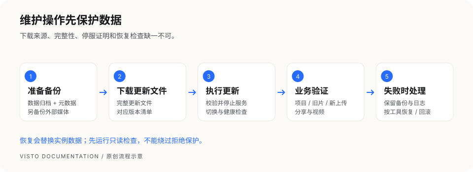

更新、恢复、回滚与卸载
本章适用于 macOS 原生 Server。执行的是主机维护操作，普通项目成员无需运行。示例路径需要替换成实际文件位置；保留所有命令输出用于定位失败。


更新 Visto
1.0.3 安装包尚未提供下列新版更新辅助脚本。这些更新命令用于后续新包；当前 1.0.3 实例更新时请使用对应 Release 的说明，不要直接执行不存在的脚本。
网页提示新版本后，从官方发布入口下载完整更新文件：安装包、同名校验文件与版本清单，把三份文件放在一起。新版更新工具会读取配套文件并自动校验，你只需要指定安装包。它不会自动下载或自动更新。
旧版安装没有这个工具时，请使用原版本的更新说明。
- 记录当前版本与运行状态。
- 创建备份，把归档、元数据和外部媒体副本妥善保存。
- 下载同一发布的包、摘要与版本清单。
- 运行更新工具：
sudo /Library/Visto/current/scripts/update-from-package.sh \
--package '/实际路径/Visto-Server_<版本>_macos-arm64.tar.gz'
脚本在校验、停服和备份保护后切换程序，检查健康状态；失败时按工具的恢复流程处理。不要手工改 current 链接。
更新后检查
curl -fsS http://127.0.0.1:8787/health/ready
sudo /Library/Visto/current/bin/visto-server --json \
--address 127.0.0.1:8787 status
再用浏览器确认项目、旧文件、新上传、视频播放和分享。健康接口通过不能代替业务数据检查。
日常服务启停与日志
维护前确认没有在途上传或重要审阅。默认 macOS 实例可以用系统服务管理器停止或启动：
# 停止
sudo launchctl bootout system/com.visto.server
# 启动
sudo launchctl bootstrap system /Library/LaunchDaemons/com.visto.server.plist
# 已加载服务的重启
sudo launchctl kickstart -k system/com.visto.server
启动或重启后再次查 health/ready 并在网页验证。若提示服务不存在或已加载，先确认当前服务状态和实际安装配置，不反复执行。默认日志位于 /Library/Logs/Visto；保留相关时间段的错误即可，发给他人前脱敏。网页全局设置通常保存后立即生效，主机环境配置的修改则按要求重启。
恢复：先只读检查，再执行替换
恢复会替换当前实例的数据目录，会影响备份之后的业务变化。先保存当前实例的备份；确认目标主机、数据目录、归档和同名元数据。
sudo /Library/Visto/current/scripts/restore-visto-server.sh \
--backup-file '/实际路径/备份.tar.gz' \
--check-only
只读检查通过且你已确认覆盖影响后执行：
sudo /Library/Visto/current/scripts/restore-visto-server.sh \
--backup-file '/实际路径/备份.tar.gz' \
--confirm-restore
两种模式不能同时使用。当前恢复保护要求原数据目录一致；跨目录恢复可能被拒绝。拒绝时保留错误，不手工解压覆盖数据库，也不修改元数据去伪装路径。
恢复后确认服务就绪、项目和版本符合备份时间，原文件可读，外部存储仍可访问；数据目录外原片需要独立恢复与核对。
回滚到保留的程序版本
sudo /Library/Visto/current/scripts/rollback-visto-server.sh \
--to-version '<已保留的版本>' \
--confirm-rollback
程序回滚与数据恢复目的不同；不能假定旧程序一定兼容当前数据库。让工具执行对应保护，按具体失败说明处理。不要删除恢复点、备份或失败日志。
卸载
默认卸载保留用户数据和备份：
sudo /Library/Visto/current/scripts/uninstall-visto-server.sh --yes
如果提示 could not be stopped，卸载会中止并保留服务配置、程序和数据。先检查服务或进程，解决原因后再试，不手工删除服务配置。
卸载程序不会自动抹掉外接盘或远程存储上的文件。--purge-data 会扩大删除影响，只在确认不需要数据并有可用备份时按该版本说明使用。
删除视频组件（可选清理）
上面的卸载只处理服务注册和程序目录，不会删除 FFmpeg 视频组件。组件留在系统共享位置，重新安装时会直接复用、不重复下载，所以通常不必删除。只有在交还设备、彻底清理环境或确认不再安装 Visto 时才做这一步。
先完成卸载，并确认服务已注销：
launchctl print system/com.visto.server
输出 Could not find service 才继续。
| 平台 | 视频组件默认位置 | 卸载后 |
|---|---|---|
| macOS | /Library/Application Support/Visto/runtime |
保留，需手工删除 |
| Linux | /var/lib/visto-runtime |
保留，需手工删除 |
| Windows | 程序目录 runtime\ffmpeg |
卸载时随程序一起移除 |
macOS：
sudo rm -rf "/Library/Application Support/Visto/runtime"
sudo ls -l "/Library/Application Support/Visto"
Linux：
sudo rm -rf /var/lib/visto-runtime
删除前核对三点：一、路径与上表一致，不要把 data 或 backups 目录写进删除命令；二、安装时若用环境变量 VISTO_MEDIA_RUNTIME_ROOT 指定过其它位置，改删该目录——实际值保存在卸载后仍然保留的配置里，可用 sudo grep VISTO_MEDIA_RUNTIME_ROOT /Library/Visto/config/visto.env（Linux 为 /etc/visto/visto.env）确认；三、本步不涉及业务数据与备份，是否保留它们由你另行决定。
删除后再安装时，安装器会重新下载并验签组件，这一步需要联网。
macOS 主机维护
4. 确认安装后的目录
| 内容 | 默认位置 | 日常用途 |
|---|---|---|
| 程序与保留版本 | /Library/Visto |
使用 current 中的正式工具，不手工改链接 |
| 主机配置 | /Library/Visto/config/visto.env |
部署维护者修改，修改后按要求重启 |
| 业务数据 | /Library/Application Support/Visto/data |
包含数据库和系统托管数据，不能直接删除 |
| 默认备份 | /Library/Application Support/Visto/backups |
保存归档及其元数据，另做异盘副本 |
| 日志 | /Library/Logs/Visto |
故障定位，分享前脱敏 |
| 视频组件 | /Library/Application Support/Visto/runtime |
FFmpeg 与 ffprobe；卸载后仍保留，重装会复用 |
完成检查： 服务就绪、浏览器能打开向导、未忽略安装失败信息。视频预览还需要下一章的媒体运行时。
Windows 主机维护
5. 程序、配置、数据分别在哪里
| 内容 | 默认位置或入口 | 用途 |
|---|---|---|
| 程序与网页 | C:\Program Files\Visto Server（示例） |
固定程序目录，更新由脚本替换 |
| 配置 | 程序目录下 visto-server.json |
监听地址、数据目录及部署选项 |
| 实例数据 | %ProgramData%\Visto\data |
数据库、秘密、数据目录内上传及预览 |
| 默认备份 | %ProgramData%\Visto\backups |
数据归档和同名元数据 |
| 启停 | 计划任务 Visto Server |
默认开机自启、使用 SYSTEM |
| 当前视频依赖 | 程序目录 runtime\ffmpeg |
当前包内运行时；以后以包说明为准 |
修改配置前保留受保护的原配置副本，修改后重启任务。配置与令牌包含敏感信息，不作为公开求助附件。
6. 日常启动、停止和诊断
Stop-ScheduledTask -TaskName 'Visto Server'
Start-ScheduledTask -TaskName 'Visto Server'
.\bin\visto-server.exe --data-dir "$env:ProgramData\Visto\data" doctor
.\bin\visto-server.exe --data-dir "$env:ProgramData\Visto\data" diagnostics export `
--output "$env:USERPROFILE\Desktop\visto-diagnostics.zip"
停止命令发出后需确认任务和相关进程确实停止。备份、恢复和更新脚本会进行自己的停服确认，不要删掉检查来强制执行。如果文件锁导致备份失败，任务可能保持停止；解除占用后先检查备份结果，再显式启动任务并验证健康和媒体，不假定自动恢复。诊断包先自行检查敏感内容，再按受控方式交给维护者。
7. 备份与恢复
先通知成员暂停写入，再运行：
.\Backup-VistoServer.ps1 -BackupDirectory 'D:\Visto-backups'
成功结果必须同时有 ZIP 与同名 .zip.json 元数据，保留二者并复制到独立位置。该备份覆盖实例数据目录；配置在程序目录、外部本机媒体目录、WebDAV 和 S3 原片需另行保护。不能把一个 ZIP 当成全部项目原片的备份。
恢复分为两步。以下文件名为示例，替换为真实备份：
.\Restore-VistoServer.ps1 -BackupFile 'D:\Visto-backups\visto-server-data-20260930-120000.zip' -CheckOnly
.\Restore-VistoServer.ps1 -BackupFile 'D:\Visto-backups\visto-server-data-20260930-120000.zip' -ConfirmRestore
只读检查通过后，先确认当前数据也有独立备份，再执行替换。不要同时传 -CheckOnly 与 -ConfirmRestore。摘要、归档路径或来源数据目录不符时停止；不编辑元数据骗过检查，也不用恢复命令做跨目录迁移。恢复后检查项目、旧媒体、新上传与分享。
8. 更新与失败恢复
从 1.0.3 更新到 1.0.4 时，先下载同次发布的 ZIP、同名 .sha256 和 .manifest.json，核对发布摘要，并将 ZIP 解压到独立临时目录。旧更新器不认识新增维护文件；使用新包中的入口，明确指定已有安装目录。以管理员身份打开 PowerShell，将示例路径换成实际位置：
& 'D:\Downloads\Visto-Server_1.0.4\Update-VistoServerPackage.ps1' `
-PackageArchive 'D:\Downloads\Visto-Server_1.0.4_windows-x64.zip' `
-InstallDirectory 'C:\Program Files\Visto Server' `
-BackupDirectory 'D:\Visto-backups'
该入口使用已有实例的校验器和更新保护，保留配置、令牌、数据及视频组件。不要把新文件手工覆盖进运行目录，也不要重新执行首装入口。
新版更新工具会读取安装包旁的同名校验文件和 .manifest.json。请下载完整更新文件；缺少配套文件时联系发布方，不自行编写清单。
更新只接受完整交付 ZIP，包括固定视频二进制、许可证、构建记录和视频审计材料；不要裁剪文件或向运行时目录随意添加 DLL。
脚本校验并暂存输入，备份数据、停止任务、替换程序并等待恢复。失败时会尝试还原旧程序及更新前数据。即使脚本报告成功，也要核对健康接口与实际业务；端口能连不代表媒体和数据库已正常。当前 Windows 脚本没有独立的 Rollback-VistoServer.ps1，不要照搬 Unix 回滚命令。自动恢复失败时保留原程序、备份与错误输出，交给维护者处理。
9. 常见问题按现象处理
| 现象 | 先检查 | 下一步 |
|---|---|---|
| 提示需要管理员权限 | PowerShell 是否“以管理员身份运行” | 重新打开管理员窗口，进入程序目录 |
| 脚本被系统拦截 | 文件来源、摘要与组织策略 | 按安全软件/管理员提示处理，不全局关闭保护 |
| 缺少 FFmpeg、网页或安全模块 | 是否解压完整、是否拿错包 | 重取同版本完整包，保留错误信息 |
| 任务存在但页面打不开 | 任务结果、健康接口、配置端口 | 执行 doctor；不要把任务存在当成功 |
| 端口被占用 | Get-NetTCPConnection -LocalPort 8787 -ErrorAction SilentlyContinue |
安装会先拒绝占用，尚不创建新数据或任务；找到占用程序后决定是否改配置，不盲目结束进程 |
| 服务读不到映射盘 | SYSTEM 与登录用户的访问差异 | 用受维护存储连接或明确服务可访问的存储方案 |
| 更新提示文件锁或停服失败 | 是否还有服务/媒体进程 | 保留现场，解决占用后再试，不手工覆盖 |
| ACL 或重解析点检查失败 | 目录权限、联接/符号链接 | 修复受信目录布局，不删保护检查 |
10. 卸载与交付检查
.\Uninstall-VistoServer.ps1
默认停止并删除开机任务，保留实例数据；不等于程序目录和外部原片已删除。只有独立备份可读、确定永久清除实例数据后，才使用 -RemoveData。不要将清除命令当成排障方法。
交付前逐项确认：重启电脑后服务就绪；Owner 可登录；成员仅看授权项目；旧媒体能打开；新上传能生成预览；HTTPS 分享可访问；备份 ZIP 与元数据已独立保存。当前候选已在干净 Windows 11 客体执行安装、浏览器播放、更新回退、恢复、整机重启及卸载保留检查。文件锁失败仍须按上面的人工处置步骤处理；有 NVIDIA 显卡不代表此组件支持 NVENC。
Linux 主机维护
5. 安装后的目录地图
| 内容 | 默认位置 | 维护方式 |
|---|---|---|
| 程序版本 | /opt/visto/releases/<版本> |
各版本独立保存 |
| 当前程序 | /opt/visto/current |
指向当前版本，不手动替换 |
| 配置 | /etc/visto/visto.env |
系统管理员维护，包含秘密 |
| 数据 | /var/lib/visto |
数据库、秘密、目录内上传与预览 |
| 备份 | /var/backups/visto |
归档与同名元数据 |
| 日志 | systemd 239 使用 journal；240 及以上使用 /var/log/visto/server.log、server.err |
排查启动与处理错误 |
| 服务定义 | /etc/systemd/system/visto.service |
安装器生成 |
| 媒体运行时根 | /var/lib/visto-runtime |
使用当前版本支持的运行时工具管理 |
如果安装时使用自定义数据目录或部署覆盖变量，记录真实路径，维护命令也要匹配该实例，不能假定所有主机都用默认值。外部媒体根权限与服务沙箱需要一致；系统管理员应按实际存储方案配置，不通过关闭全部服务保护来解决读写问题。
7. 启停、日志和诊断
sudo systemctl stop visto.service
sudo systemctl start visto.service
sudo systemctl restart visto.service
sudo journalctl -u visto.service -n 100 --no-pager
sudo tail -n 100 /var/log/visto/server.err
sudo /opt/visto/current/bin/visto-server --data-dir /var/lib/visto doctor
systemd 239 使用 sudo journalctl -u visto.service -n 100 --no-pager 查看日志，文件日志步骤只用于 systemd 240 及以上。
服务启动失败时先读日志，再检查配置和依赖；不要反复重装或删除数据。日志可能含路径和用户信息，提供求助材料前脱敏。服务修改配置后需重启；网页中的业务设置按页面反馈判断保存是否完成。
8. 备份并验证覆盖范围
sudo /opt/visto/current/scripts/backup-visto-server.sh
也可在独立备份磁盘上指定保存目录，须确认磁盘已挂载且容量足够：
sudo /opt/visto/current/scripts/backup-visto-server.sh --backup-dir /mnt/backup/visto
脚本先证明服务停止，再归档数据目录并生成数据库事实元数据，之后启动服务。只有归档和元数据均成功生成才算备份完成。备份放另一磁盘或可信远程位置；外部媒体、WebDAV、S3、/etc/visto 的部署配置另行备份。迁移到新主机还涉及恢复路径约束，不能直接承诺跨主机/跨目录恢复。
9. 更新、恢复与回滚
更新使用实际下载的包、摘要和同版本清单。示例输入需全部替换：
sudo /opt/visto/current/scripts/update-from-package.sh \
--package '/实际路径/Visto-Server_1.0.3_linux-amd64.tar.gz'
上面示例为 x86_64；ARM64 使用同版本的 Visto-Server_1.0.3_linux-arm64.tar.gz 和该文件对应摘要，不能混用架构。
脚本验证布局，准备新版本、备份数据、停服并切换 current，失败时尝试还原。没有清单时停止，不手工改 current 或覆盖运行中的程序。更新成功后检查旧数据与新上传，不只看进程。
恢复先跑只读检查；示例归档名替换为真实备份：
sudo /opt/visto/current/scripts/restore-visto-server.sh \
--backup-file '/var/backups/visto/实际备份.tar.gz' --check-only
sudo /opt/visto/current/scripts/restore-visto-server.sh \
--backup-file '/var/backups/visto/实际备份.tar.gz' --confirm-restore
恢复会替换当前实例数据，先另做当前数据备份。归档与同名元数据必须一起保留，只支持检查认可的原数据目录；旧格式元数据或路径不符被拒绝时，不手改元数据。
回滚程序版本先检查保留的版本：
sudo ls /opt/visto/releases
sudo /opt/visto/current/scripts/rollback-visto-server.sh \
--to-version '<仍保留的版本号>' --confirm-rollback
回滚程序不等于把数据库和媒体恢复到任意历史时刻。数据兼容性与恢复需求要分别判断；目标版本已清理或数据不兼容时联系维护者。成功后重新检查健康、登录、媒体与分享。
10. 网络与常见问题
默认 Core 仅监听回环。日常远程访问用受维护的 HTTPS 反向代理，再在工作空间配置外部访问地址；不要直接把 8787 暴露到公网。防火墙开放的是代理入口，浏览器里的本机地址不能发给客户。
| 现象 | 先检查 | 处理方向 |
|---|---|---|
Exec format error |
uname -m 与安装包架构 |
换同架构完整包 |
| glibc 版本错误 | getconf GNU_LIBC_VERSION |
换受支持系统，不替换系统 C 库 |
| 找不到 systemctl | 主机是否真正使用 systemd | 选择符合基线主机，或按 Docker 支持范围部署 |
| 安装缺网页/脚本/声明 | 解压根目录与包完整性 | 用完整包，不分别下载文件拼装 |
| 服务启动失败 | journalctl、server.err |
查地址占用、配置、目录权限与运行依赖 |
| 端口被占用 | sudo ss -ltnp 'sport = :8787' |
查明占用者，选择其它端口，不盲目杀进程 |
| 上传不能写或空间不足 | 实际存储权限、挂载和 df -h |
修复真实存储条件，保留已有数据 |
| 视频无预览 | 同架构运行时、处理任务状态 | 核对运行时供应和安装结果 |
| SSH 转发打不开 | SSH 连接、远端健康、本机端口 | 分别确认两端，不改为公网裸端口 |
| 停服检查/恢复预检被拒绝 | 相关子进程、元数据与来源目录 | 保留现场，解决原因后再试，不绕过保护 |
11. 卸载与最终检查
sudo bash /opt/visto/current/scripts/uninstall-visto-server.sh
默认停止并注销服务、移除程序发布目录，保留用户数据、备份和日志。停服失败会中止卸载，保留服务配置和程序；看到 could not be stopped 时先检查服务或进程，解决原因后再试，不手工删除服务配置。卸载前另存配置和完整备份；--keep-releases 可保留程序版本。--purge-data 会额外删除数据和备份目录，只有明确永久清除并确认独立备份可恢复时才使用，不能当排障步骤。
视频组件不在卸载范围内：默认位于 /var/lib/visto-runtime，卸载后仍保留。需要彻底清理时看更新、恢复、回滚与卸载里的“删除视频组件”一节，不要连同数据目录一起删。
交付清单：安装架构正确；整机重启后健康成功；首次设置与权限正确；图片与视频预览通过；真实存储可读写；外部 HTTPS 分享可达；备份归档与元数据已独立保存；更新和恢复在对应平台受控验证。当前候选已在 x86_64 Rocky 8.10 与 ARM64 Ubuntu 24.04 客体执行安装、媒体、恢复及整机重启检查；ARM64 Rocky 8.10 的兼容补验在完整模拟客体执行。模拟客体结果不代表真实 ARM64 服务器硬件通过。